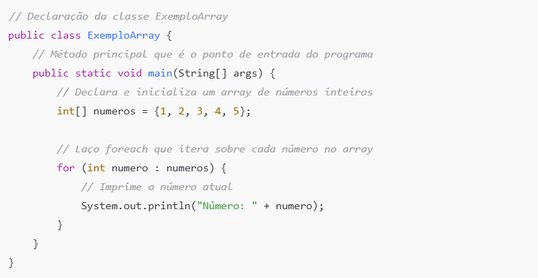

Java script -
JavaScript é uma das linguagens de programação mais populares e amplamente utilizadas na web. Criada inicialmente por Brendan Eich em 1995, JavaScript foi projetada para adicionar interatividade às páginas da web, tornando-as dinâmicas e responsivas. Ao longo dos anos, evoluiu de uma linguagem simples para um poderoso ambiente de desenvolvimento que pode ser executado tanto no lado do cliente (navegadores) quanto no lado do servidor (com o uso do Node.js).
Características Principais do JavaScript:
1. Linguagem de Programação Interpretada: JavaScript é interpretado diretamente pelo navegador, o que significa que o código é executado à medida que é lido, sem a necessidade de compilação prévia.
2. Multiparadigma: JavaScript suporta programação funcional, orientada a objetos e baseada em eventos, oferecendo flexibilidade para os desenvolvedores escolherem o estilo que melhor se adapta às suas necessidades.
3. Event-driven (Dirigido a Eventos): JavaScript é ideal para a programação orientada a eventos, onde ações como cliques de mouse, carregamento de páginas e entradas de teclado podem desencadear funções específicas.
4. Linguagem de Primeira Classe na Web: JavaScript é a linguagem principal para desenvolvimento front-end e é compatível com todos os principais navegadores. Juntamente com HTML e CSS, forma a base da web moderna.
5. Ecossistema e Bibliotecas: JavaScript possui um ecossistema robusto com diversas bibliotecas e frameworks populares, como React, Angular, Vue.js e jQuery, que facilitam o desenvolvimento de interfaces de usuário complexas e eficientes.
6. Execução do Lado do Servidor: Com o advento do Node.js, JavaScript também pode ser executado no lado do servidor, permitindo o desenvolvimento full-stack utilizando uma única linguagem de programação.
Exemplo de Código JavaScript:
Aqui está um exemplo simples de JavaScript que exibe uma mensagem de alerta quando uma página é carregada:
E um exemplo de interatividade com manipulação de DOM (Document Object Model):
A lógica de programação em JavaScript segue os princípios gerais de qualquer linguagem de programação,
mas é especialmente adaptada para o desenvolvimento web e aplicações interativas. Aqui estão os principais
conceitos e estruturas que definem a lógica de programação em JavaScript:
1. Sequência
As instruções em JavaScript são executadas na ordem em que aparecem, de cima para baixo, a menos que seja alterado por estruturas de controle.
2. Estruturas Condicionais
JavaScript usa if, else if, else, e switch para tomar decisões com base em condições específicas. Isso permite que
o código seja executado de acordo com a lógica definida pelo programador.
3. Laços de Repetição
JavaScript oferece laços (for, while, do...while) para repetir blocos de código várias vezes.
For Loop: Usado para iterar sobre uma sequência ou repetir um bloco de código um número específico de vezes.

While Loop: Executa um bloco de código enquanto uma condição for verdadeira.
4. Funções
Funções em JavaScript permitem a modularização e reutilização de código. Podem ser definidas com a palavra-chave function ou como funções anônimas.
5. Objetos e Arrays JavaScript é uma linguagem orientada a objetos, o que significa que muitos de seus conceitos são baseados em objetos. Arrays e objetos são fundamentais para a manipulação de dados.
Array: Coleção de itens ordenados, que podem ser acessados por um índice.
Objeto: Coleção de propriedades nomeadas, onde cada propriedade possui um nome (chave) e um valor.
6. Manipulação do DOM
JavaScript interage diretamente com o Document Object Model (DOM), permitindo a manipulação de elementos HTML em tempo real. Isso é essencial para a criação de páginas web interativas.
7. Programação Assíncrona
JavaScript é famoso por seu modelo assíncrono, permitindo a execução de código não bloqueante usando callbacks, promises, e async/await.
Promises: Usadas para manipular operações assíncronas de forma mais eficiente.

Async/Await: Facilita o trabalho com código assíncrono, tornando-o mais legível.

8. Manipulação de Erros
JavaScript fornece estruturas como try, catch, e finally para lidar com exceções e erros no código.
Esses conceitos formam a base da lógica de programação em JavaScript, capacitando os desenvolvedores a criar desde simples scripts até aplicações complexas e interativas.